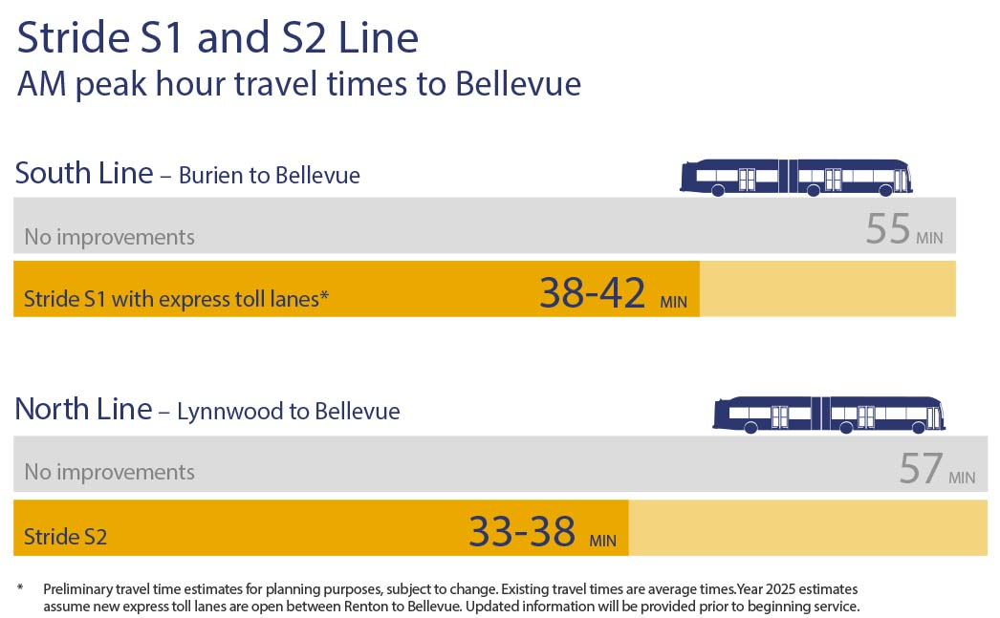
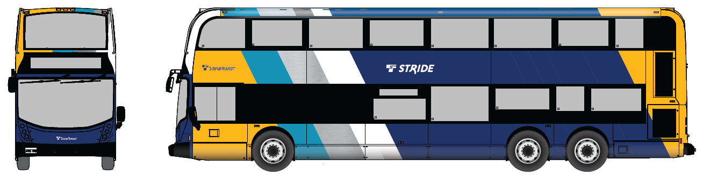
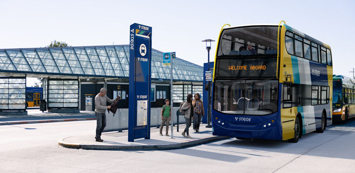
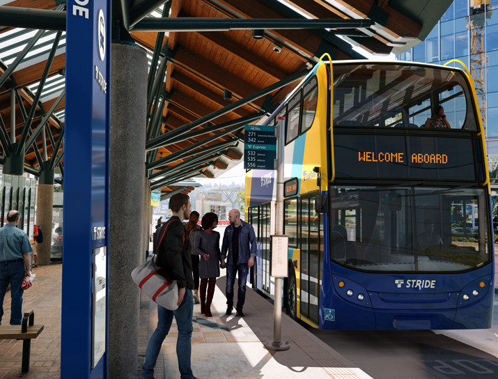
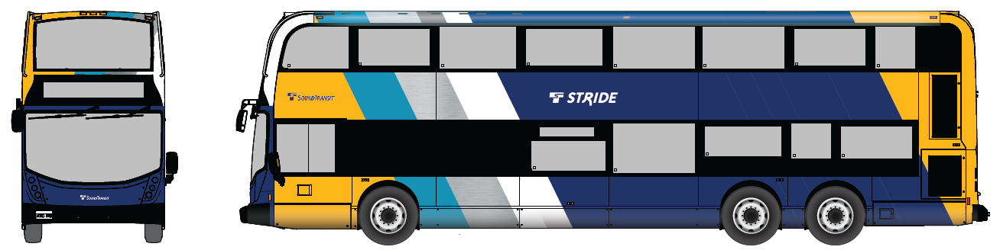
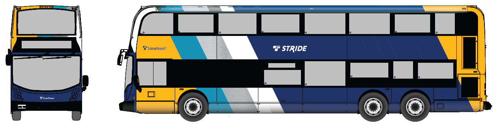

This online engagement website shares 60% design
plans and updates for the public.
The goal of the Stride bus rapid transit (BRT)
program is to provide more convenient and efficient
ways for you to get to your destination, with
frequent service every day throughout the region.
Watch our short video below for an introduction to
Stride BRT
We are hosting public meeting drop-in sessions
to share the 60% design plans. Come to your
city’s meeting to learn more about the design in
your city, ask questions and share your
thoughts on future construction.
March 15
Lake Forest Park
3 - 7 p.m.
Brookside Elementary
March 22
Seattle / Shoreline
3 - 7 p.m.
Shoreline Unitarian Universalist Church
March 28
Kenmore
4 - 8 p.m.
Kenmore City Hall
Sound Transit’s Stride bus rapid transit will be
a fast, frequent, and reliable bus service
connecting to light rail and to communities
north, east, and south of Lake Washington.
Similar to light rail service, Stride is
designed for convenient travel with fast
arrivals and departures, including off-board
fare payment and multiple-door entry and exit.
New bus lanes and transit priority improvements
help riders avoid traffic. Our Stride bus fleet
will include battery electric buses (BEBs) for a
cleaner more sustainable way to travel in the
region. Stride routes will replace existing ST Express service currently operated by transit partners.
Route 560 will be replaced by S1: I-405 South, Route 535 will be replaced by S2: I-405 North, and Route
522 will be replaced by S3. Stride buses will connect to Link Light Rail and provide new ways for you to
get to your destination. Our Stride program will also include a
new bus maintenance base in Bothell to guarantee
a safe, clean and comfortable ride for Sound
Transit passengers. The S1, S2, and S3 bus lines
together form the Stride program.
What are S1 and S2?
The S1 and S2 Stride Lines, formerly known as
I-405 bus rapid transit in the project’s
planning phase, will connect communities along
I-405 and SR 518 from Lynnwood to Burien. S1
runs from Burien to Bellevue and S2 runs from
Bellevue to Lynnwood. With buses running as
often as every 10 minutes, this new service will
connect to Link light rail at Lynnwood, Bellevue
and Tukwila, the S3 Stride line in Bothell, and
to other transit services provided by Sound
Transit, Community Transit and King County
Metro. The project includes a new transit center
in South Renton and 10 Stride stations, three of
which will also add parking, for a total of
1,300 new spaces. The parking at the South
Renton Transit Center and at Northeast 44th Street is anticipated to be completed in 2034. The Totem
Lake/Kingsgate station in Kirkland is
anticipated to be completed in 2035. The S1 and
S2 Lines build upon the Washington State
Department of Transportation's I-405 Master Plan
with roadway improvements for faster travel. We
are partnering with WSDOT to design and
construct several of the Stride stations along
these service lines.
S1 and S2 Lines save on your travel time

What is S3?
The S3 Stride Line, formerly known as SR 522/NE
145th bus rapid transit, will serve the growing
north Lake Washington communities from Shoreline
and Seattle to Bothell. The project includes 14
Stride stations. The S3 Line will connect riders to
Link light rail at Shoreline South/148th at the
west end of the corridor, and at the east end of
the corridor to the S2 line in Bothell. S2 and S3 will connect at the SR
522/I-405 Transit Hub with transit service
provided by Sound Transit, Community Transit and
King County Metro. Stride will add parking in Kenmore
and Bothell, anticipated to be complete in 2034,
and in Lake Forest Park, anticipated to be complete in 2044.
The S3 Line will reduce your transit travel time
Stride Fleet
You can recognize Stride buses by their blue,
yellow, and white colors. The Stride branding
makes them easy to spot. There will be a
fleet of double decker buses on S1 and S2 as well as articulated buses on S3. Stride will also feature a
brand new fleet of
battery electric buses. See a
preview of the bus design below:

Take our survey
We want to hear from you as we prepare for
construction in your neighborhood.
Stride will connect communities east, north, and south
of Lake Washington
Background
Stride has come a long way since the planning phase
Our projects reach various milestones —30%, 60%, and 90%
design— during the design phase that are associated with
a general level of design "completeness." The 30% design
phase was completed in 2021 and 2022, and we are now at
60% design for the Stride program. At final design, the
plans are finalized and made ready for construction.
We anticipate starting construction in 2024/2025 and
starting service on some lines as early as 2026/2027.
Included in the 2016 voter-approved Sound
Transit 3 measure, the Stride program will
provide fast, frequent, and reliable transit
service to people living and working along I-405
and SR 522. New Stride connections from Bellevue
to Burien, Lynnwood to Bellevue, and Shoreline
and Seattle to Bothell build upon Sound
Transit’s commitment to equitable, accessible,
and affordable transportation. With projected
population growth across the Puget Sound, Stride
is a 19-hour-a-day service that will meet more
people’s transportation needs and connect the
region in new and faster ways. There is no need
to look at a bus schedule for Stride, since buses
come every 10 to 15 minutes. It offers an easy
alternative to driving congested roadways,
bypassing traffic on I-405 in the Express toll
lanes and building Business Access and Transit
lanes on SR 522. Stride lines will work with regional partners to provide more service in addition to
integrating with Sound Transit Link service. Stride's connections to light rail can take you to a
Mariners game or the Sea-Tac Airport and
eventually all the way to
Everett or Tacoma. S3 stops along the
Burke-Gilman trail, so you can enjoy a scenic
walk or bike ride to Stride stations.
In the face of the pandemic and steeply rising
cost pressures across the Puget Sound region,
the Sound Transit Board of Directors took action
in August 2021 to ensure our voter-approved
transit expansion program remains affordable.
This critical work addressed an estimated $6.5
billion affordability gap for delivering
projects on their previous schedules, due to
regional real estate and construction costs
driving up future project estimates.
After 17 months of staff and Board discussions
and engagement with jurisdictions and
stakeholders, the Board adopted a realignment
plan on Aug. 5, 2021. Learn more about the
Board’s action in our
Platform blog post.
Based on current revenue projections and cost
estimates, the Board’s adopted plan identifies:
2026/2027 as the timeframe we can afford to
begin service on the SR 522/NE 145th BRT
project (Stride S3).
2026/2027 as the timeframe we can afford to
open service on the south Stride bus rapid
transit line from Burien to Bellevue (the S1
Line), and complete construction of the NE
85th Station on the north line.
2026/2027 as the timeframe we can afford to
open service on the north line from Bellevue
to Lynnwood (the S2 Line). This service date
is also coordinated with WSDOT’s I-405,
Brickyard to SR 527 Improvement Project.
2034 as the timeframe we can afford to
provide additional parking in Kenmore and
Bothell.
2044 as the timeframe we can afford to
provide parking in Lake Forest Park.
2034 as the timeframe we can afford to
provide parking at NE 44th in Renton and the
South Renton Transit Center.
2035 as the timeframe we can afford to
provide additional parking at Kingsgate in
Kirkland.
Project costs are being tracked closely as we
work with partner jurisdictions and stakeholders
to advance Stride projects. The projects’
ultimate timelines will come into greater focus
as we advance project design and property
acquisition, including examining cost-saving
options.
Our path forward will be shaped by determined
efforts to secure expanded funding. Close
collaboration with partners will be required to
deliver projects as rapidly as possible.
Learn more about the realignment process and
increased construction cost estimates at
soundtransit.org/realignment.
Sound Transit has completed a State
Environmental Policy Act (SEPA) environmental
checklist for our Stride projects: I-405 BRT, SR
522 BRT and Bus Base North operation and
maintenance facility. Based on the checklist,
technical reports and other information, Sound
Transit has determined that the Stride projects
do not have a probable significant adverse
impact on the environment and issued a
Determination of Nonsignificance (DNS) for each
project.
Sound Transit continues to track project design
for changes to the environmental impacts
documented in the SEPA process and the potential
need for additional evaluation of impacts and
mitigation.
Thank you for your continuous feedback and
comments. Your thoughts help us better
understand the communities we serve. Since 2018,
we’ve met with approximately 80 community
organizations, 130 property owners, and
thousands of community members at local events.
A few common themes we’ve heard from the public
are questions and comments around project
timeline, future construction schedule, project
design and affects, and station design and
locations. Summaries of previous public outreach
efforts are available on our project websites
within the documents section.
As the design continues to advance, we are continuing
conversations on individual site plans and answering
project-related questions. We contacted individual
property owners to begin the property acquisition
process between September 2021 and February 2023.
The project team has actively
engaged with property owners who may
be affected by the project since
early in the design process.
Property owners in Seattle,
Shoreline, on the east side of SR
522 in Lake Forest Park, on the west
side of SR 522 in Lake Forest Park,
Kenmore, and Bothell were invited in
phases to discuss how the project
may impact their property
specifically and to answer
project-related questions between
January 2020 and August 2021.
In-person property owner meetings
were shifted to virtual meetings due
to social distancing recommendations
for COVID-19. Property owners were
notified of other opportunities to
engage with the project and project
information through mail, email and
project updates.
In March 2021, the project reached
the 30% design milestone and the
project team held an online open
house and virtual town halls to share
the latest design information. Based
on feedback from property owners,
the route alignment in Lake Forest
Park was shifted to the west of SR
522 to minimize the number of
property owners that would require
relocation.
The project team continues to answer
project-related questions from
property owners and neighborhood groups and meet with them
on request as design refinements
progress.
The project team has actively
engaged with property owners who may
be affected by the project since
early in the design process.
Property owners were offered
meetings if they were affected by
the project. Due to the pandemic, property owner engagement
meetings were shifted to virtual
meetings. The project went through
Civil Certification with Sound
Transit Board of Directors in June
of 2022.
Sound Transit has refined the design
of the Stride program to minimize
the number of property owners that
would require relocation, and the
great majority of the properties
impacted as part of the program
involve only partial acquisitions
and temporary construction
easements. However, in a small
number of cases, a project impact is
so great to a particular property
that an owner/tenant may be
displaced in the process. Should
that occur, displaced individuals or
businesses are entitled to
relocation assistance and payments
provided by the Uniform Relocation
Assistance and Real Property
Acquisitions Policies Act of 1970
(Uniform Act).
Sound Transit will fully inform any
person who qualifies as a displaced
person of their rights and
entitlements to relocation
assistance and payments provided by
the Uniform Act. Relocation
Assistance Advisory Services are
available to any displaced person or
business. A displaced person or
business will be assigned a
Relocation Agent from Sound Transit
who will be available to discuss the
relocation procedures and answer
questions.
Saves time and energy by bypassing car
traffic along I-405 and SR 522
Expands transit access and connections
to diverse and growing communities
Creates new connections to light rail,
King County Metro, and Community Transit
Uses the first-ever Sound Transit
battery electric buses, reducing air
quality impacts
Creates easy and quick boarding with
multiple doors and offboard payment
Uses new and existing BAT and Express Toll Lanes to
bypass congestion and improve transit
reliablity
Provides an alternative to single
occupancy vehicles
Includes stations with weather
protections and clear signage

Improves pedestrian access to stations
Design Updates
Learn about Stride’s latest design plans for your area
To reach the 60% design milestone, we’ve continued
conversations with jurisidictions and communities along
the corridor to ensure the project meets jurisdictional
code requirements and the needs of residents and riders.
We will continue to work with jurisdictions and property
owners to refine designs. In each section, you can find design updates and roll plots as they are available.
Throughout the Stride program, there are new
changes in design including:
Improvements to pedestrian access with new
sidewalks and lighting.
Sound Transit's first battery electric bus fleet. Charging stations will be added at each terminus for
all Stride lines.
Over 40 BRT stations total along the S1, S2, and S3 lines. The typical shelter will be
48 feet long and most will have ticket
vending machines, ORCA card readers and
message signs.
Throughout the S3 Line, the design changed
to create significantly larger, more
accessible stations.
Part of our Stride program is being designed and
constructed by our local partner agencies and
cities. The Washington State Department of
Transportation, the Cities of Bothell, Shoreline, Kirkland, and Renton as well as the University of
Washington Bothell are some key
partners who are constructing Stride elements. Our partners contribute to the success
of the Stride bus rapid transit program.
Bus Base North will add a new bus maintenance
and operations building and a parking structure
for buses and other vehicles. 30% design is
complete and 60% design is underway.
Design includes:
A 2.5-acre site within Canyon Park Business
Center on 20th Avenue Southeast.
A two-story Administration and Operations
building, a Bus Vehicle Maintenance
building, Bus Storage and battery electric
bus charging facility with employee parking
above.
Screening landscape around the facility.
Artwork will be integrated into the facility
in locations that are visible by the public.
The Bus Base North facility will ensure Stride buses receive regular cleaning and maintenance
Bus Base North Map
Below you will find city-by-city design updates.
S1 Line Design Updates
The S1 line will include one station in Burien
at the Burien Transit Center (Southwest 148th
Street and First Avenue South).
Design refinements include:
Modification of the western island within the transit center for the future Stride station.
Roadway improvements to add a bus-only lane
along Southwest 148th Street, connecting
onto SR 518, for Stride operations.

Rendering of a Stride station at the Burien Transit Center
The Tukwila International Boulevard Station
(SR 518 and Tukwila International Boulevard)
will serve Tukwila and SeaTac.
In partnership with WSDOT, the S1 line will include a new freeway Stride
station on SR 518. Riders will be able to
connect to existing light rail service via a new
pedestrian bridge. This will provide an easy
transfer for Stride BRT riders looking to travel
to the airport or Seattle.
Design refinements include:
General refinements to the station design.
Advancing utilities and stormwater drainage
and electrical lighting at Stride islands.
Refining station architecture to include
Stride elements.
The Tukwila Boulevard Station will have Stride station pairs
The S1 line will include two stations in
Renton:
Northeast 44th Station (I-405 and NE 44th
Street) and South Renton Transit Center
(Rainer Avenue South and South Grady
Way).
The NE 44th Stride station will be delivered as
a part of the WSDOT Renton to Bellevue project.
Design refinements include:
A surface parking lot at the South Renton
Transit Center, which will be replaced by a
five-level parking garage in the future.
Two bus islands encompassed of eight bus
bays, most under a canopy cover, serving
Sound Transit’s Stride, King County Metro
RapidRide and local buses at the South
Renton Transit Center.
Battery electric bus charging infrastructure for Stride and King County Metro buses
at the transit center.
A new four-way signalized intersection built
on Rainier Avenue South and Hardie Avenue
Southwest to support bus operations.
Pedestrian safety improvements such as new
sidewalks and lighting at the transit
center.
Construction work done along SR 167 to add
bus on-shoulder lanes near the I-405
on-ramps and off-ramps to support Stride
operations.
The Renton Park & Ride will feature two Stride islands.
The S1 and S2 line will include a Stride station
at the
Bellevue Transit Center on Northeast 6th
Street and 110th Avenue Northeast.
Riders will be able to connect to local and
express buses, King County Metro RapidRide and Link light rail at
the Bellevue downtown station. The north and
south Stride lines, S1 and S2, will connect at
this station.
Design refinements include:
Construction work at the Bellevue Transit
Center to prepare for the installation of
Stride station elements such as the shelter,
pylon, and signage. Pylons are large station
markers to help you navigate Stride more
easily.
Construction work done along 110th Avenue
Northeast and Northeast 12th Street to add
bus layover bays for Stride. A bus layover
bay is an area where buses can stop
momentarily before starting their next trip,
giving bus operators a break. There will also be battery electric bus charging at the layover.

The Bellevue Transit Center will have a new Stride station
The S1 Line connects communities from Bellevue to Burien
Stride S1 Line Map
S2 Line Design Updates
The S2 line segment will include two stations in
Kirkland: Totem Lake/Kingsgate Station (I-405
and Northeast 128th Street) and the Northeast
85th Station (I-405 and Northeast 85th
Street.) In conjunction with WSDOT, we’re
building the Northeast 85th Street Station.
Design refinements include:
A new three-tired interchange at Northeast 85th
Street with an inline BRT station on I-405
and access to the Express Toll Lanes.
Minor construction and cosmetic work will
add the necessary infrastructure for the
existing BRT stations and Totem
Lake/Kingsgate station to incorporate Stride
station elements and bus service.
The S2 line segment will include one station in
Lynnwood at the Lynnwood City Center Station
(200th Street Southwest and 48th Avenue West). This
Stride station will be adjacent to the future
Lynwood Link light rail station, which is
currently under construction and will begin
service in 2024. This will be the terminus of the S2 Line.
Design refinements include:
Construction work done at the existing
Lynnwood Transit Center to prepare
foundations and tie-ins for two new Stride
BRT bus stations (pick-up and drop-off) and
a Stride BRT layover bay.
Roadway improvements and widening
construction work happening on the
northbound I-5 on-ramp at Poplar Way, as well
as the southbound I-5 on-ramp at 196th/36th
Street. This will be to support the Stride
operations to and from Lynnwood Transit Center.
Rendering of a Stride station at the future Lynnwood Transit Center
The S2 Line connect communities from Bellevue to Lynnwood
Stride S2 Line Map
S3 Line Design Updates
The S3 line segment along Northeast 145th Street
includes BRT stations at the Shoreline
South/148th light rail station and on Northeast
145th Street at 15th Avenue Northeast and 30th Avenue
Northeast. There will also be roadway widening
for bus lanes and new sidewalks westbound
between 8th Avenue Northeast and 6th Avenue
Northeast, and in both directions between
approximately 12th Avenue Northeast and 17th Avenue
Northeast. Sidewalk upgrades are also associated
with the station located at 30th Avenue
Northeast.
Design refinements include:
Roadway, driveway, and sidewalk/planting
strip refinements to reduce property and
tree impacts.
Rendering of the Shoreline/Seattle 15th Avenue NE westbound platform
The S3 line segment in Lake Forest Park includes
BRT stations on
522 at Northeast 153rd Street, Northeast 165th Street and at
Ballinger Way Northeast.
The project also includes roadway widening for a
bus lane and new sidewalks northbound on SR 522
between just south of Northeast 147th Street and
41st Avenue Northeast.
Design refinements to reduce impacts to property
owners include:
Repurposing the existing two-way left-turn
lane to reduce the project footprint.
Adding a sidewalk and planting strip on the
east side of SR 522 for safe pedestrian
access.
Completing a business access and transit (BAT) lane network on Bothell Way
to save riders time. BAT lanes are curb lanes used only by buses and right-turning vehicles. These BAT
Lanes are now complete and in operation.
Shifting of widening to the west side of SR
522, to greatly reduce the number of homes
that could require full acquisitions and
relocations on the east side of SR 522.
Relocating some utilities from the west side
to the east side.
Refining widths of sidewalks and planting
strips to reduce impacts to trees.
Other design refinements include:
Refining design of stormwater infrastructure
and utility design.
Enhancing the retaining wall designs in partnership with Lake Forest Park and WSDOT to better
integrate them into the community.
Refining the design of driveways on the east
side of SR 522 to create vehicle access and
turnarounds.
Rendering of the westbound Lake Forest Park Town Center station
The S3 line segment in Kenmore includes three
BRT stations on SR 522 at 61st Avenue Northeast,
68th Avenue Northeast, and 73rd Avenue
Northeast. This section of the corridor has
existing bus lanes so no roadway widening is
included as part of this project.
Rendering of the 61st Ave NE westbound Stride station
The S3 line segment in Bothell will include five
stations at 98th Avenue Northeast and Northeast
182nd Street, Northeast 185th Street and 104th
Avenue Northeast, UW Bothell/Cascadia
College-Beardslee Boulevard, Beardslee Boulevard
and Northeast 195th Street, and the SR 522/I-405
Transit Hub. The Transit Hub, connecting S2 and S3, is being designed by Sound Transit and WSDOT that
includes a safe and accessible pedestrian connection to the University of Washington Bothell/Cascadia
College (UWB/CC) campus and the Sammamish River and North Creek Trails.
The S3 Line connects communities from Shoreline to Bothell
Stride S3 Line Map
Partner Agency Projects
What are our partners doing to prepare for Stride?
Stride will connect cities surrounding Lake
Washington to the regional Sound Transit Link light
rail system and to other transit services provided
by King County Metro and Community Transit. To
prepare for Stride service in the region, Sound
Transit is partnering with cities and transit agency
parners to improve infrastructure and transit
connections.
Travelers on I-405 between Renton and
Bellevue experience one of the state’s worst
commutes. The I-405 Renton to Bellevue Widening
and Express Toll Lanes project includes
multimodal transportation and safety
improvements to offer more reliable travel
choices and keep drivers, transit riders and
freight moving.
The Renton to Bellevue project will add new
capacity to create a two-lane Express Toll Lane (ETL) system between
SR 167 in Renton and Northeast 6th Street in
Bellevue. In general, the project will add one
new lane in each direction and combine the
existing HOV lane with the new lane to create a
dual ETL system.
The new ETLs will connect to the existing
express toll lane system between Bellevue and
Lynnwood, as well as the SR 167 HOT lanes via
the I-405/SR 167 Interchange Direct Connector,
to create a 40-mile ETL system. This project is
designed to improve speeds and trip reliability
for all travelers and support the new I-405 Bus
Rapid Transit (BRT) line between Lynnwood and
Tukwila included in the voter-approved Sound
Transit 3 package.
Rendering of the Northeast 44th Street Interchange
as part of the Renton to Bellevue project
The I-405, Brickyard to SR 527 Improvement
Project lies primarily in Bothell on I-405, starting just south of the SR 522
interchange and ending at the SR 527
interchange. The communities in this vicinity
will see major improvements in added express
toll lane capacity, direct access to state
highways and improved connections to regional
transit service at both the UW Bothell Station
(SR 522) and Canyon Park Park- and-Ride (SR 527),
integrating corridor investments with Sound
Transit’s planned opening of the S2 Line. The Brickyard station in Bothell will
be a new transit-only inline Stride station
facility to support the Stride S2 line,
improving connections to the existing park and
ride.
The project will enhance 4.5 miles
of the corridor with a focus on both the main
project expansion and overall operational
improvements. The project will build one new
express toll lane in each direction between
south of SR 522 and SR 527 (extending the
existing dual express toll lane system), widen
I-405 through the SR 522 interchange and build
direct access ramps to the express toll lanes at
SR 522, and build a partial direct access
interchange at SR 527 to and from the south
connecting to the Canyon Park Park-and-Ride. The
project will include additional local roadway
improvements, fish barrier corrections, noise
walls, and new stormwater facilities.
Map of the Brickyard to SR 527 Improvement Project
The proposed I-405, Northeast 85th Street
Interchange and Inline Station Project is
located within the City of Kirkland along
Interstate 405 (I-405). In partnership with the City of Kirkland, the project will replace
the existing two-level cloverleaf interchange at
Northeast 85th Street with a three-level interchange
and construct local improvements along Northeast
85th Street and its intersection with 114th
Avenue Northeast/ Kirkland Way.
The City of Shoreline is designing improvements
for the SR 523 (N/NE 145th Street) and
I-5 interchange including NE
145th Street between 5th Avenue NE and the on-
and off-ramps on the west side of I-5. The
project will replace the signalized
intersections on either side of I-5 with
roundabouts
and update lane configurations on the bridge
over I-5.
The 145th Street and I-5 Interchange Project
will improve safety and multimodal access along
the 145th Street corridor and help connect to
the future Sound Transit Shoreline South/148th
Light Rail Station, planned to open in 2024. The
interchange improvements will alleviate traffic
congestion and enhance transportation mobility,
reliability, and safety for all users, including
pedestrians, bicyclists, transit, and freight.
Your feedback is very important to us as we move
towards construction.
During construction, Sound Transit works with the contractor to make sure the neighbors and
businesses are aware of upcoming work
Next Steps
Stay informed about Stride
In the upcoming design phase: the project team will:
Finalize the design of roadways and sidewalks.
Finalize station design and integration of
public art.
Prepare for construction.
Obtain land use, environmental, and construction
permits.
Continue the property acquisition process.
Continue engaging with the public, community
groups, businesses, elected officials to inform
about design and construction plans.
If you have questions, please reach out to the
project team by email at brt@soundtransit.org,
or by phone at 206-370-5533. We encourage you to
subscribe to our email list to stay tuned for future updates.
Join us at our public meetings to receive more
updates and provide feedback.
We are hosting public meeting drop-in sessions
to share the 60% design plans. Come to your
city’s meeting to learn more about the design in
your city, ask questions and share your
thoughts on future construction.
March 15
Lake Forest Park
3 - 7 p.m.
Brookside Elementary
March 22
Seattle / Shoreline
3 - 7 p.m.
Shoreline Unitarian Universalist Church
March 28
Kenmore
4 - 8 p.m.
Kenmore City Hall
Want to learn more about Stride? The Stride
documents webpage for S1, S2, and S3 has
everything from our SEPA analysis, detailed
project maps, to Community Engagement Guides.
The
documents page
is a resource for the public to find detailed
Stride information.
Sound Transit is committed to being a good
neighbor during construction. We will work to
manage impacts on surrounding communities by:
Maintaining a safe construction site: We
fence off construction areas, keep the site
tidy, adhere to noise variances, etc.
Keeping people moving: We provide safe
pedestrian and cyclist routes, shift traffic
to accommodate construction impacts, and
maintain access to private properties and
local neighborhoods.
Protecting the environment: We make sure our
work does not have negative impacts on the
environment.
Implementing a business relations program:
We provide resources to help businesses
prepare for construction such as our
business toolkit.
Maintain a 24-7 construction telephone
hotline: We are available to answer
construction questions and hear comments on
the project.
Sound Transit may request code variances from
cities and agency partners to complete work
outside of typical construction hours to
progress the overall project.


 
